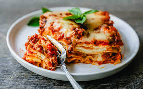

Description
This is a classic homemade lasagna recipe made with layers of gooey melted mozzarella
cheese, parmesan ricotta cheese, and a robust tomato meat sauce. It is perfect for
weeknight dinners, potlucks, or to take to friends who just had a baby. This lasagna
recipe can be frozen so it is perfect to make ahead of time. It also makes flavorful
leftovers.
Lasagna Ingredients:
- Olive Oil
- Onion (finely diced)
- Ground Beef
- Garlic Powder (or 5 garlic cloves, finely minced)
- Salt and Pepper
- Marinara Sauce
Parmesan Ricotta Cheese Filling:
- Whole milk Ricotta Cheese
- Grated Parmesan Cheese
- Egg
- Dried Basil, Salt, and Pepper
- Lasagna Noodles or Lasagna Sheets
- Mozzarella Cheese
Steps
- Start by making a homeade meat sauce. This is done by sauteing an Onion
in olive oil until it begins to soften. This brings out the sweet flavor of the onion. Then
it is time to brown the ground beef until it is browned and the onion is softened. Stir in
the marinara sauce and let it simmer on low. If you want your lasagna to be extra saucy, I
I suggest adding 1/2 jar more marinara sauce.
- Make a parmesan ricotta cheese mixture. This is what gives the lasagna the creamy
filling. I love to flavor the ricotta cheese with a good amount of parmesan cheese, spices, and egg
to bind it together.
- Use your favorite lasagna noodles. There are two choices for lasanga noodles;
oven-ready pre-cooked noodles or lasagna noodles that need to be cooked before hitting the oven.
I have tried both ways and can attest that they both work!
- Bring on the cheese! The best lasagna is full of cheese so be generous with
the layers of mozzarella cheese.
- Bake covered for 15 minutes and then remove the foil and continue to cook until
the cheese is bubbly. Let it set up for 10 minutes before serving.
Recipe sourced from Modern Honey.
Home